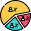

Audit 1/2
Ce qui a été un succès
En général: Traiter du Handicap / rassembler candidats et employeurs
Pour employeurs: Publier des offres / Offre visible par les handicapés / accès à des profils
Pour candidats: Visible par les recruteurs / Parler du handicap / unique en meurthe & Moselle
Audit 2/2
Ce qui doit progresser
Problème d'accéssibilité
Lever les préjugés
Faciliter l'emploi des travailleurs handicapés
Mix marketing
Le mix marketing a été abordé suivant la méthode des 4P:
Produits , Place , Prix et Promotion.
Attirer
Comment attirer nos personas, employeurs et candidats, sur les services d'Handirecrute.
1- Les entreprises >20 pers. ont une obligation de recrutement de personnes handicapées.
2- Les candidats souhaite une écoute sans préjugé et être utile.
Boucle virtueuse: + de candidats = + d'offres = + de candidats ...
Le relai des réseaux sociaux permettra d'augmenter sa visbilité.
Convertir
Le but est de transformer le visiteur en membre
Pour le candidat: Inscription gratuite.
Pour l'employeur: Montrer la richesse des profils déjà membre.
Conclure
Il faut rester en relation avec les visiteurs
jusqu'à l'inscription sur le site.
Fidéliser
 Médias sociaux
Médias sociaux 
Réaliser des sondages 
E-mailing & newsletters